Open Value — landing explorations
Working boards for the landing page: the beam family (dark, current), the light figure family it grew from, and the earlier concept, visual and hero explorations kept for reference.
Live page: beam, built in HTML and JavaScript
CurrentThe dark landing page with all six figures drawn live by live/beam.js: laid out for the real width, animated (sparks fall, positions rise, the beam drifts), paused under reduced-motion. Headline per Da's Oct 22 note. No screenshots; resize it.
Beam: the record as one line of light
Boards · staticDark theme, one motif. The record is a beam; fingerprints are sparks that fall onto it; readers check from below. B0–B2 are emblems: the motif carries the meaning and labels stay minimal. B3–B5 keep the explanatory geometry of the figure family, re-themed, with the beam standing in for the record. Dashed core means proposed.
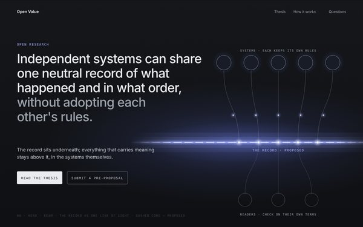
B0Hero · the beamDa's headline. Claim as subline. Systems above, readers below.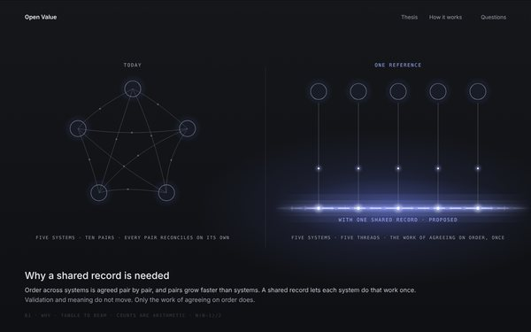
B1Why · tangle to beamTen threads for five systems, then five.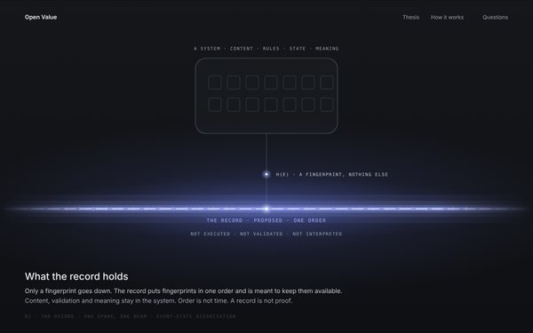
B2The record · one sparkOnly a fingerprint goes down.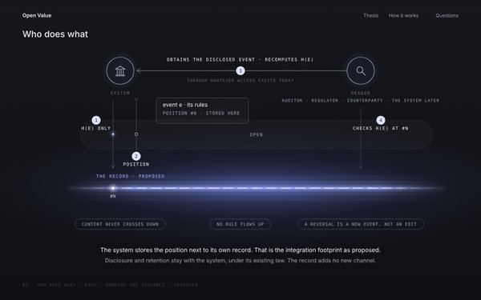
B3Who does whatExplanatory, dark.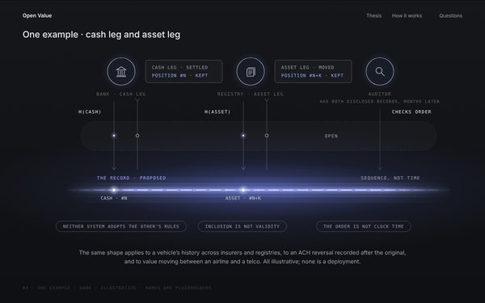
B4One example · two legsExplanatory, dark. Illustrative.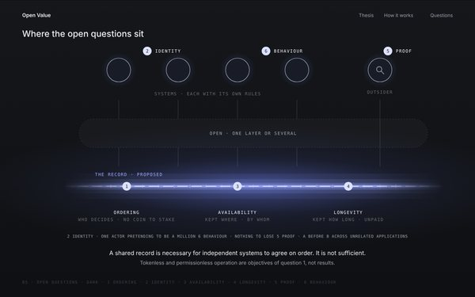
B5Where the open questions sitExplanatory, dark.Figure family: one geometry, six sections
Light · explanatorySix figures from one fixed geometry: systems above, an open middle, the record below drawn as one ordered baseline, readers beneath. Each figure shows only what its section is about. Solid means exists today; dashed accent means proposed or under research. Page order follows the brief: claim, why, the record, who does what, one example, open questions.
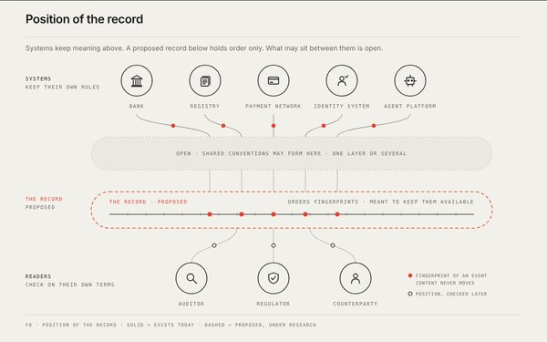
F0Position of the recordHero figure. The whole model at a glance.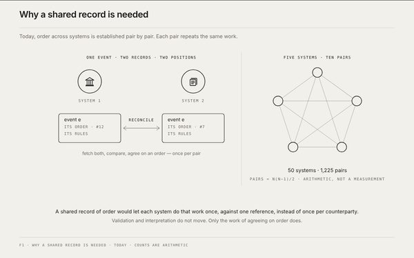
F1Why a shared record is neededToday, pair by pair. The record is not drawn yet.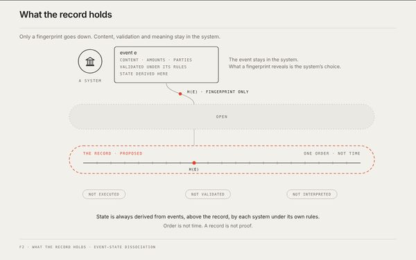
F2What the record holdsOnly a fingerprint goes down.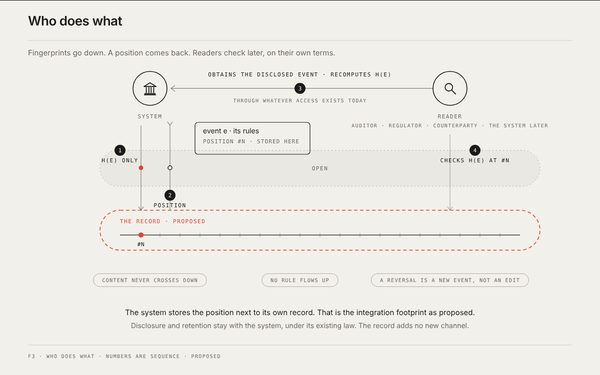
F3Who does whatDown, back, and the reader's check.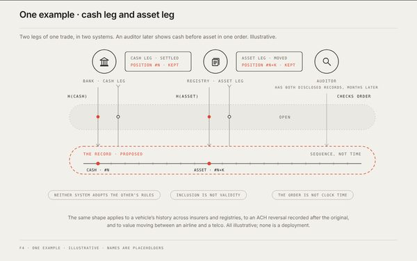
F4One example · two legs, two systemsCash leg and asset leg. Illustrative.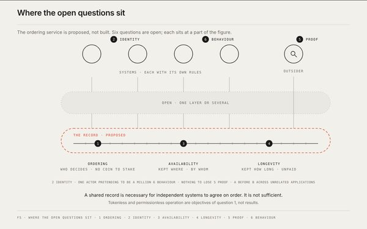
F5Where the open questions sitSix questions on the same figure.Concept: explanation first
Direction · superseded by the familyThe sequence the family grew from. Claim, then why a shared record is needed, then the record underneath, then who does what. Emotional framing comes later, as a team pass.
Visuals: the service and its actors
ReferenceTen ways to show who does what. V01–V08 each try a different visual theme; V09–V10 answer the Oct 22 review (why a shared record is needed, and base vs semantic layers) in V01's language. Use cases and numbers are illustrative.


Hero explorations
ReferenceTwelve hero directions. Copy is shared across boards; entry numbers and hashes are illustrative. Dashed outlines mean proposed or under research.